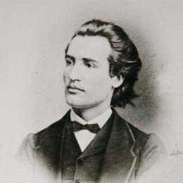

Three Poets

15.01.1985 - 15.06.1889
Stuff about Eminescu.
Mihai Eminescu (born on January 15, 1850, Botoşani, Moldova, d. 15/27 June 1889, Bucharest, Romania) was a poet, prose writer and Romanian journalist, considered by Romanian readers and literary criticism posthumously the most important poetic voice in Romanian literature. He was receptive to the European romanticism of the eighteenth and nineteenth centuries, assimilated Western poetic visions, his creation belonging to a relatively late literary romanticism. When Mihai Eminescu recovered the traditional themes of European Romanticism, the taste for the past and the passion for national history, which he even wanted to build a Pantheon of voivodes, regressive nostalgia for childhood, melancholy and the cultivation of depressive states, the return to nature etc., European poetry discovered the paradigm of modernism, through Charles Baudelaire or Stéphane Mallarmé, for example. The poet had good philosophical education, his poetic work being influenced by the great philosophical systems of his time, the ancient philosophy from Heraclitus to Plato, the great systems of thinking of Romanticism, the theories of Arthur Schopenhauer, Immanuel Kant (also Eminescu worked for a while to translate his Critique of pure reason, at the instigation of Titu Maiorescu, who had asked him to take his Ph.D. in Kant's philosophy at the University of Berlin, a plan not yet completed) and Hegel's theories.
© 2010 Nobody at all | Contact